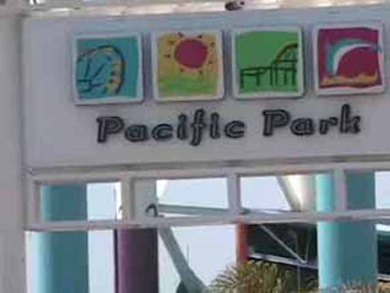
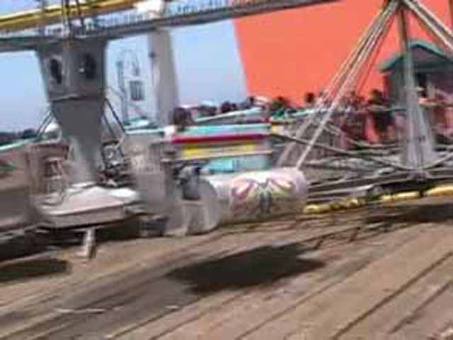

Santa Monica Pier 2006

We're here at the Santa Monica Pier.
Westcoaster. The real reason we are here.
\
On Westcoaster, Its all about the helixes!
Westcoaster has a little bit of airtime on those hills. Oh By the way, Why did they paint half the ride yellow!?!?
Westcoaster has a very cool setting.
The Santa Monica Peir has other rides too. Like Pacific Plunge.
Pacific Plunge is basically a Giant Frog Hopper. Celeste loved it.
Heres the view you get from Pacific Plunge.

The Santa Monica Pier replaced their Chaos with a scrambler! You bastards! Bring back the Chaos!
The Santa Monica Pier is automaticaly an Andrew Friendly park!
Andrew! Stop poisening the minds of little kids to love Pirate Ships!
Heres the view you get from the Pacific Wheel.
Hi, My name is Celeste"Too Chicken to do a flip Beach Fanatic"Bujold! Who are you!
Enough about all the other rides at the Santa Monica Pier! Back to Westcoaster!
 WESTCOASTER MADNESS!!!!!!!!
WESTCOASTER MADNESS!!!!!!!!
 Westcoaster is a fun little coaster
Westcoaster is a fun little coaster
And here is one more picture of Westcoaster to end this update.
Home